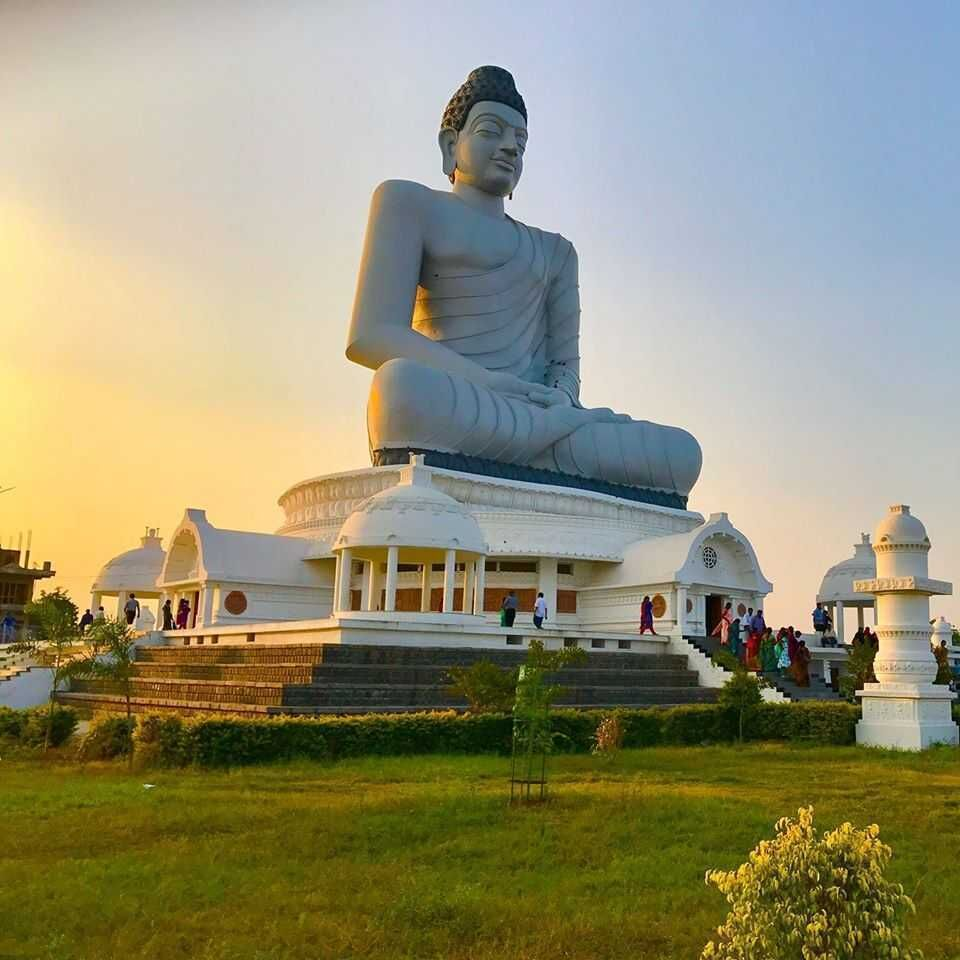
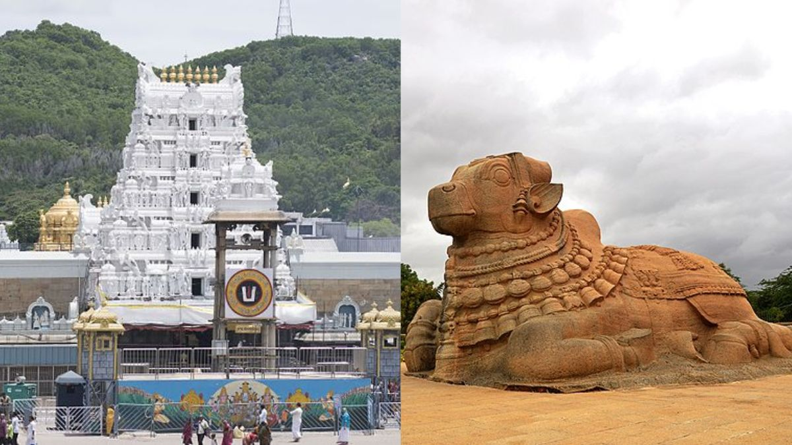

Andhra Pradesh is a state in the southern coastal region of India.
It is the seventh-largest state with an area of 162,970 km² and the tenth-most populous state with 49,577,103 inhabitants.
It shares borders with Chhattisgarh, Odisha, Karnataka, Tamil Nadu, Telangana, and the Bay of Bengal.
The state has three main physiographic regions: the coastal plain to the east, extending from the Bay of Bengal to the mountain ranges;
the mountain ranges themselves, the Eastern Ghats, which form the western flank of the coastal plain; and, in the southwest, the plateau to the west of the Ghats. The coastal plain, also known as the Andhra region, runs almost the entire length of the state and is watered by several rivers, flowing from west to east through the hills into the bay.
The deltas formed by the most important of those rivers—the Godavari and the Krishna—make up the central part of the plains, an area of fertile alluvial soil.


As united Andhra Pradesh, it consisted of 21 district's, with 10 districts of Telangana region.
In the year 1959, Bhadrachalam and Nuguru Venkatapuram taluks of East Godavari district, which are on the other side of the Godavari River,
were merged into Khammam district on grounds of geographical contiguity and administrative viability.
Similarly Aswaraopeta part of West Godavari District was added to Khammam district and Munagala taluk belonging to Krishna district
was added to Nalgonda district in the same year.
The number of districts became 23 with the formation of Prakasam district from the parts of Guntur, Nellore and Kurnool district's
in 1970 and Vizianagaram district from parts of Visakhapatnam and Srikakulam districts in 1979.
After the bifurcation of the United Andhra Pradesh in 2014, the Andhra region now known as Andhra Pradesh was left with 13 districts
but was given several tribal-dominated mandals from the Khammam district of the Telangana as part of the Polavaram project.
These mandals were added to the East Godavari and West Godavari district's respectively.
On 26 January 2022, the Government of Andhra Pradesh had proposed 13 new districts by issuing
a draft notification under the Andhra Pradesh Districts (Formation) Act, 1974, Section .
After taking the objections and suggestions received from the public into consideration,
the government has published the final notification on 3 April 2022. With effect from 4 April 2022
the newly formed districts came into effect as specified in the schedule.
At present there are 26 districts spread across 3 cultural regions: Uttaraandhra, Kostaandhra and Rayalaseema.
Uttarandhra consists of Srikakulam, Vizianagaram, Parvathipuram Manyam, Alluri Sitharama Raju,
Visakhapatnam and Anakapalli Districts. Coastal Andhra Consists of Kakinada, Konaseema,
East Godavari, West Godavari, Eluru, Krishna, NTR, Guntur, Palnadu, Bapatla, Prakasam and Nellore districts.
Rayalaseema consists of Kurnool, Nandyal, Anantapuramu, Sri Sathya Sai, YSR, Annamayya, Tirupati and Chittoor districts.